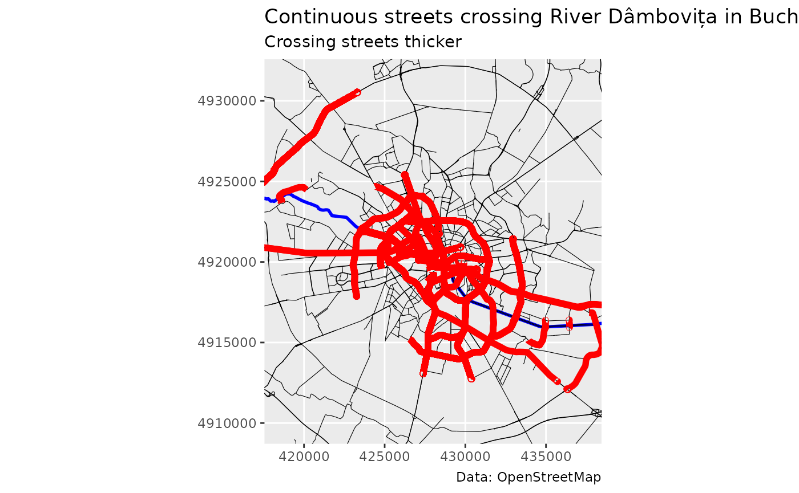

library(rcoins)
library(sf)
#> Linking to GEOS 3.12.1, GDAL 3.8.4, PROJ 9.4.0; sf_use_s2() is TRUE
library(ggplot2)In this article we demonstrate how to trace continuous streets using
the stroke() function. The function takes an
sf object of streets and returns a new sf
object with continuous streets.
# Load streets from example OSM data
bucharest <- get_example_data()
streets <- bucharest$streetsTracing on the entire network
If we run the stroke() function with the default values,
strokes will be calculated on the network as a whole.
# Trace continuous streets
continuous_streets <- stroke(streets)To visualise the strokes in a more intuitive way, we map the line weight in the plot to the length of the strokes. The thicker a line is, the longer the stroke.
Tracing from specified streets
To trace continuous streets from a given set of streets, we can add
the edge indices in the from_edge argument. We demonstrate
this by tracing all continuous streets crossing river Dâmbovița in
Bucharest. We load the river centerline from the example data.
# Load river centerline from example data
river_centerline <- bucharest$river_centerline
crossing_edges <- which(st_intersects(streets,
river_centerline,
sparse = FALSE))
# Trace continuous streets crossing the river
continuous_streets_crossing <- stroke(streets, from_edge = crossing_edges,
angle_threshold = 120)Note that the input argument angle_threshold sets the
minimum internal angle between consecutive line segments that can be
considered part of a continuous stroke.
We plot the street network and emphasize the continuous streets crossing the river.

Maintaining the initial structure
The flow_mode argument allows us to maintain the initial
structure of the streets. With flow_mode = FALSE (the
default), the function will split the initial streets in individual line
segments and calculate the continuous streets purely based on minimum
angle deviations. With flow_mode = TRUE, the function will
not break the initial line strings, but only group and connect them on
the basis of minimum angle deviations.
Tracing with attributes
By enabling flow_mode and attributes
arguments, stroke will still group streets on the basis of
minimum-angle connectivity, but return group labels instead of the new
aggregated geometries. This is useful if we want to keep attributes such
as degree of the initial streets (“primary”, “secondary”, “tertiary”,
etc.) in the resulting continuous streets to calculate, for instance,
the relationship between street degree and street length.